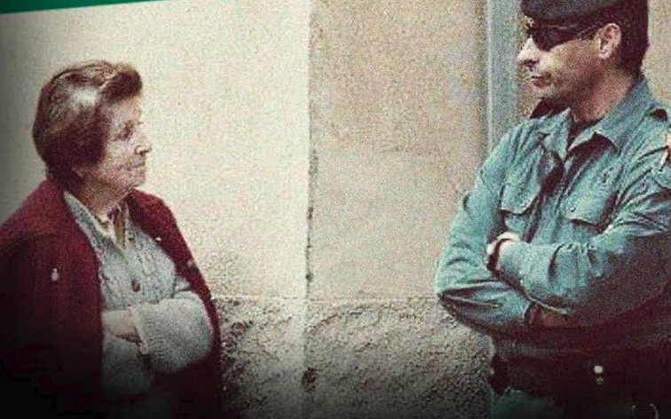

Desafiante
La CUP organizó en verano de 2017 una concentración a favor del referéndum utilizando una imagen de una anciana y un guardia civil en todos los carteles. ¡Resistencia!

<<< Volver a las preguntas

Este obra está bajo una licencia de Creative Commons Reconocimiento-CompartirIgual 4.0 Internacional.